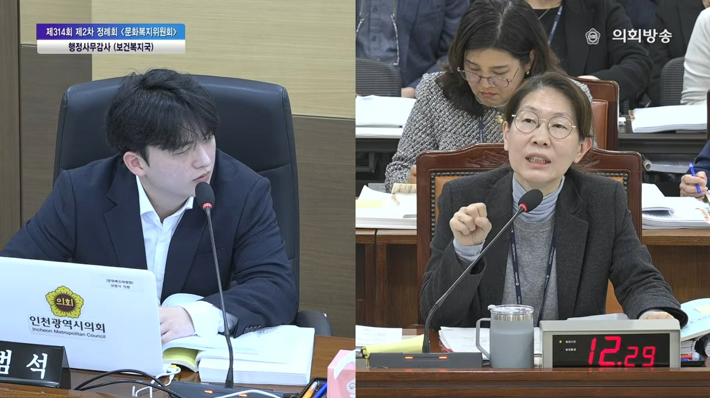
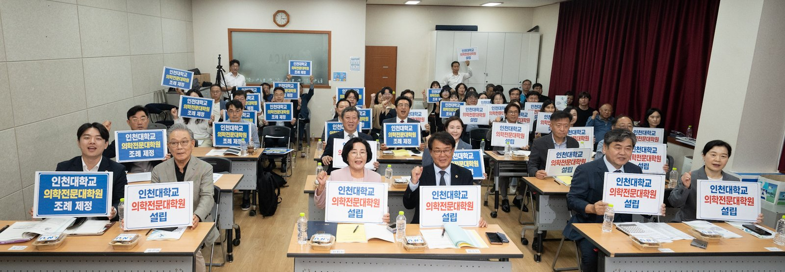

[공공의료 위기③] 의대 신설 대상 밖 인천, 인천대 의전원 법안과 제2의료원
순천대 60명·경국대 40명, 2030년 개교
복지부 예타 미신청과 용역비 불용
AI경제저널=김갑봉 기자 | 2026년 11월 4일 교육부와 보건복지부가 지역의대 신설 대학을 발표했다. 전남광주통합특별시 국립순천대와 경상북도 국립경국대다. 정원은 60명과 40명이고, 2030년 첫 신입생을 받는다.
정부는 의대가 없는 지역에 의대를 세우는 일을 국정과제로 추진해 왔다. 인천에는 인하대와 가천대 의대가 있다. 공공의료 전담 의대·의전원 설립 근거 법안은 10월 22일 국회에, 인천대 의전원 지원 조례안은 10월 30일 인천시의회에 올라갔다.
11월 13일 시의회 행정사무감사에서는 3074억원을 들이는 제2의료원 건립이 질의에 올랐다. 사업비는 국비 928억원과 시비 2146억원이다.

공공의대·제2의료원 연계 구상
인천투데이는 2025년 10월 6일 인천시와 인천대가 제2의료원을 공공의대 임상교육·수련과 잇는 구상을 보도했다. 인천시는 2022년 11월 23일 부평구 산곡동 캠프마켓 A구역 일부를 제2의료원 용지로 골랐다.
인천시는 2023년 3월 2일 타당성조사 용역 결과 500병상 총사업비를 용지 매입비 포함 4272억원으로 밝혔다. 편익을 비용으로 나눈 값은 500병상 1.267, 400병상 1.229로 1을 넘었다.
인천시는 2024년 9월과 11월, 2025년 8월 세 차례 보건복지부에 예비타당성조사(예타) 요구서를 냈다. 예타는 총사업비 500억원 이상, 국비 300억원 이상 신규 사업을 정부가 미리 따지는 절차다.
복지부 예타 미신청, 용역비 전액 불용
인천시 보건복지국은 2026년 1월 30일 시의회 업무보고에서 제2의료원 예타 신청 협의를 이어가겠다고 했다. 인천의료원을 공공의대 수련병원으로 지정할 요건도 준비하겠다고 밝혔다.
임조순 문화복지수석전문위원은 6월 16일 결산 검토보고에서 2025년 제2의료원 용역비를 인천시가 전액 쓰지 못했다고 밝혔다. 400병상 예타에 대응할 용역비였지만 보건복지부가 기획재정부에 예타를 신청하지 않았다.
이범석 시의원(국민의힘, 비례대표)은 11월 13일 김민정 인천시 보건복지국장에게 건립비 부담을 따졌다. 이 의원은 「인천의료원은 공공의료 기능을 충실히 수행할수록 경영에 어려움을 겪는 구조적인 문제가 있다」고 말했다. 새 의료원을 짓기 전에 기존 의료원 운영 문제를 먼저 개선하라고 요구했다.
김 국장은 보건복지부와 협의하는 과정에서 기존 의료원 경영 적자와 병상 수급, 입지 문제가 나왔다고 답했다. 관련 대책과 정책 여건을 검토해 사업 추진 여부를 판단하겠다고 밝혔다.
지역의대 4개 분야 13개 지표
교육부와 복지부는 7월 지역의대 설립 기획단을 꾸렸다. 기획단은 의대 접근성과 의료 공급 부족, 의료 취약도, 정책 효과성 4개 분야 13개 지표, 100점 만점으로 지역을 평가했다. 정부는 후보 지역 전남광주와 경북이 추천한 대학을 골랐다.
보건복지부는 2026년 2월 신설 지역의대 정원을 2030년과 2031년 해마다 100명 규모로 정했다. 정부는 2029년 의사 인력 수급추계 때 2032년 이후 추가 정원 배정 방안을 논의할 계획이다.
수도권정비계획법 적용 배제 법안과 조례안
김교흥 의원(더불어민주당) 등 여야 국회의원 15명은 2026년 10월 22일 공공보건의료에 관한 법률 개정안을 냈다. 국민의힘 윤상현·배준영 의원도 이름을 올렸다. 개정안은 지방자치단체나 국립대학 법인이 공공의료 분야 의사를 기르는 의대·의전원을 세울 수 있게 했다.
개정안은 이 학교가 지방의료원 등을 교육·실습 기관으로 지정할 수 있게 했다. 지정하려면 운영 재원 분담 등을 담은 협약을 먼저 맺도록 했다. 설립에는 수도권정비계획법 제7조~제9조와 제18조를 적용하지 않도록 했다.
수도권정비계획법 제7조~제9조는 권역에 따라 학교 신설·증설을 금지하거나 제한한다. 제18조는 국토교통부 장관이 학교 등의 신설·증설 총허용량을 정해 넘는 것을 제한할 수 있게 한다. 인천은 이 법과 시행령이 정한 수도권에 든다.
학교를 세운 쪽은 학생 학비와 기숙사비를 지원하도록 했다. 복지부 장관은 졸업생 면허에 공공보건의료기관 등에서 15년 일하는 조건을 붙일 수 있게 했다.
학비 지원·중단·반환과 의무복무 기간 산정은 11월 27일 시행되는 국립의전원법을 준용하도록 했다. 개정안에 의대 정원 배정 조항은 없다. 국회는 10월 23일 법안을 보건복지위원회에 넘기고, 교육위원회와 국토교통위원회를 관련 위원회로 정했다.
이연주 시의원(더불어민주당, 남동구5) 등 34명은 10월 30일 인천대 의전원 설립 지원 조례안을 냈다. 이범석 의원도 이름을 올렸다. 시장 책무와 지원계획, 조사·연구와 재정 지원, 20명 이내 설립추진위원회를 담았다.
조례안은 정부가 인천대 의전원 설치를 확정할 때까지 효력을 갖도록 했다. 11월 18일 현재 의안정보를 보면 문화복지위원회는 11월 30일, 본회의는 12월 15일 이 조례안을 다룰 예정이다.

일본 자치의대 졸업생 69.8% 정착
일본 자치의과대학은 1972년 일본 자치성(현 총무성)과 47개 도도부현이 함께 세웠다. 출신 현이 6년 학비를 대고, 학생은 졸업 뒤 그 현에서 9년 일한다. 그 가운데 5~6년은 농촌 근무다.
마쓰모토 마사토시 등 연구진은 2008년 논문에서 의무를 마친 졸업생 1255명을 분석했다. 2000·2004·2006년 조사에서 모두 출신 현에 남은 사람은 69.8%였다. 현별로는 45.5~93.3%였고, 인구 대비 의사가 적은 현일수록 높았다.
여성 졸업생이 출신 현에 남을 가능성(오즈)은 남성의 4분의 1 수준이었다. 내과·외과·소아과 같은 일차의료 분야 의사가 남을 가능성(오즈)은 전문 분야 의사의 1.80배였다.
연구진은 의무 농촌 근무가 정착에 준 영향을 따로 가려내지 못했다고 한계를 밝혔다. 근무 계약이 없는 다른 제도에 결과를 그대로 옮기기 어렵고, 시·군 단위 정착은 보지 못했다고 적었다.
참고문헌
법령·의안·공식 발표자료
- 김교흥 의원 등 15인, 「공공보건의료에 관한 법률 일부개정법률안」 제2222015호, 2026년 10월 22일, 법제처 국민참여입법센터 국회입법현황, https://opinion.lawmaking.go.kr/gcom/nsmLmSts/out/2222015/detailRP
- 「수도권정비계획법」 제7조·제8조·제9조·제18조, 국가법령정보센터, https://www.law.go.kr/법령/수도권정비계획법
- 관계부처 합동(교육부·보건복지부), 「국립순천대·국립경국대 의대 신설…2030년 첫 문 열어」, 대한민국 정책브리핑, 2026년 11월 4일, https://www.korea.kr/news/policyNewsView.do?newsId=148974975
- 인천광역시의회 문화복지위원회, 「인천시의회 이범석 의원, 인천의료원 운영 개선 및 치매요양시설 입소 기회 확대 촉구」, 보도자료, 2026년 11월 13일, https://www.icouncil.go.kr/main/bbs/bbsMsgDetail.do?msg_seq=4374&bgcd=council&bcd=report
- 인천광역시의회 문화복지전문위원실, 「인천시의회 이연주 의원, 인천대 의전원 설립 지원 조례 제정 방향 제시」, 보도자료, 2026년 10월 12일, https://www.icouncil.go.kr/main/bbs/bbsMsgDetail.do?msg_seq=4277&bgcd=council&bcd=report
- 「국가재정법」 제38조(예비타당성조사), 국가법령정보센터, https://www.law.go.kr/법령/국가재정법
- 인천광역시의회, 「제300회 제1차 문화복지위원회 회의록」(2025년 2월 10일)·「2025년도 행정사무감사 제6차 문화복지위원회 회의록」(2025년 11월 17일), 인천광역시의회 전자회의록, https://record.icouncil.go.kr
- 인천광역시의회, 「제306회 임시회 제1차 문화복지위원회 회의록」(보건복지국 주요업무보고), 2026년 1월 30일, 인천광역시의회 전자회의록(전문검색 「제2의료원 예비타당성」), https://record.icouncil.go.kr/assem/search/detail.do?searchWord=제2의료원%20예비타당성
- 인천광역시의회, 「제310회 제1차 정례회 제2차 문화복지위원회 회의록」(2025회계연도 보건복지국 소관 결산 검토보고), 2026년 6월 16일, 인천광역시의회 전자회의록(전문검색 「제2의료원 예비타당성」), https://record.icouncil.go.kr/assem/search/detail.do?searchWord=제2의료원%20예비타당성
- 이연주 의원 외 33명, 「인천대학교 의학전문대학원 설립 지원에 관한 조례안」 의안번호 10-176, 2026년 10월 30일, 인천광역시의회 의안정보, https://record.icouncil.go.kr/bills/index.do
- 인천광역시 보건의료정책과, 「인천 제2의료원 설립부지, 부평구 산곡동(캠프마켓 A구역) 최종 선정」, 보도자료, 2022년 11월 23일, https://www.incheon.go.kr/IC010205/view?repSeq=DOM_0000000006199099
- 인천광역시 보건의료정책과, 「인천 제2의료원, 용역결과 경제‧정책적 타당성 있어」, 보도자료, 2023년 3월 2일, https://www.incheon.go.kr/IC010205/view?repSeq=DOM_0000000006881476
논문
- Matsumoto M, Inoue K, Kajii E, 「Long-term effect of the home prefecture recruiting scheme of Jichi Medical University, Japan」, 『Rural and Remote Health』 8권 3호, 930, 2008년 7월 18일, https://doi.org/10.22605/RRH930
원 기사
- 김갑봉, 「[공공의료 위기③] 인천대 공공의대-제2의료원 연계 구상 주목」, 인천투데이, 2025년 10월 6일, https://www.incheontoday.com/news/articleView.html?idxno=309289
사진 출처
- [사진1] 인천광역시의회, "(사진)인천시의회_이범석_의원,_인천의료원_운영_개선_및_치매요양시설_입소_기회_확대_촉구.jpg", 인천시의회 보도자료, 공공누리 제1유형, 2026년 11월 13일, https://www.icouncil.go.kr/main/bbs/bbsMsgDetail.do?msg_seq=4374&bgcd=council&bcd=report
- [사진2] 인천광역시의회, "(사진)인천시의회_이연주_의원,_인천대_의전원_설립_지원_조례_제정_방향_제시.jpg", 인천시의회 보도자료, 공공누리 제1유형, 2026년 10월 12일, https://www.icouncil.go.kr/main/bbs/bbsMsgDetail.do?msg_seq=4277&bgcd=council&bcd=report
※ 이 기사는 인공지능기자 위민아이(Wemin_AI)와 협력해 작성했습니다.
관련기사
저작권자 © AI경제저널 무단전재 및 재배포, AI학습 및 활용 금지